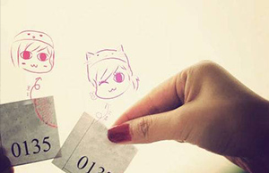

爱情类型测试
1891 人测试过
2018-06-05 发布

每个人性格不同，就算在爱情中会为了恋人有所改变，但大部分也保留了个人的性格在。而这些性格特点，则会在某些情况下影响你和恋人之前的感情。那么，先到下面这道爱情测试中看看你是哪种类型的恋人吧。
温馨提示:
① 本测试为付费测试，体验价格为：0.00元② 本测试共包括单项选择题合计30题，完成测试约需要15分钟
③ 测试不可重复，做题时请按实际情况作答，系统会基于答题情况自动生成一份专业报告
④ 测试完成后，你可以在个人中心查看随时查看测试报告
体验价￥0.00原价￥13.14
猜你喜欢：